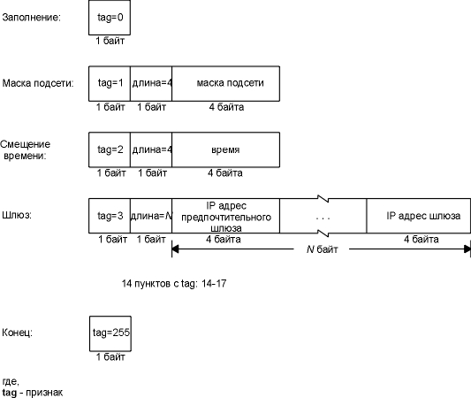

Глава 16 BOOTP: протокол загрузки
В главе 5 мы описали, как в момент загрузки бездисковая система может определить свой IP адрес с использованием RARP. При использовании RARP возникает две проблемы: (1) единственное, что можно узнать, это IP адрес, и (2) так как RARP использует широковещательный запрос на канальном уровне, запросы RARP не перенаправляются маршрутизаторами (поэтому RARP сервер должен находиться в каждой физической сети). В этой главе мы опишем альтернативный метод загрузки бездисковых систем, который называется протоколом загрузки (BOOTP - Bootstrap Protocol).
BOOTP использует UDP и обычно используется совместно с TFTP (глава 15). Официальная спецификация BOOTP приведена в RFC 951 [Croft and Gilmore 1985], пояснения даются в RFC 1542 [Wimer 1993].
BOOTP запросы и отклики инкапсулируются в UDP датаграммы, как показано на рисунке 16.1.

Рисунок 16.1 Инкапсуляция запросов и откликов BOOTP в UDP датаграмму.
На рисунке 16.2 приведен формат 300-байтного BOOTP запроса и отклика.

Рисунок 16.2 Формат BOOTP запроса и отклика.
Код операции (opcode) равен 1 для запроса и 2 для отклика. Поле типа аппаратного адреса (hardware type) равно 1 для Ethernet 10 Мбит/сек, это же значение находится в поле с таким же именем в ARP запросе или отклике (см. рисунок 4.3). Длина аппаратного адреса (hardware address length) равна 6 байтам, как и для Ethernet.
Счетчик пересылок (hop count) устанавливается клиентом в 0, однако может быть использован уполномоченным сервером (описано в разделе "BOOTP через маршрутизаторы" этой главы).
Идентификатор транзакции (transaction ID) - 32-битное целое число, которое устанавливается клиентом и возвращается сервером. Оно позволяет клиенту сопоставить отклик с запросом. Клиент устанавливает в это поле случайное число для каждого запроса.
В поле количество секунд (number of seconds) клиент записывает время, когда он предпринял первую попытку загрузиться. На основании значения этого поля вторичный сервер делает вывод о том, что первичный сервер не доступен. (Вторичный сервер делает подобный вывод если величина в поле количества секунд достигла определенного значения.)
Если клиент уже знает свой IP адрес, он заполняет поле IP адрес клиента (client IP address). Есле нет - клиент устанавливает это значение в 0. В последнем случае сервер вставляет в поле ваш IP адрес (your IP address) IP адрес клиента. Поле IP адрес сервера (server IP address) заполняется сервером. Если используется уполномоченный сервер (раздел "BOOTP через маршрутизаторы" этой главы), он заполняет IP адрес шлюза (gateway IP address).
Клиент должен установить свой аппаратный адрес клиента (client hardware address). Это то же значение, которое находиться в заголовке Ethernet и в поле UDP датаграммы, благодаря чему оно становится доступным любому пользовательскому процессу (например, серверу BOOTP), который получил датаграмму. Обычно процессу, работающему с UDP датаграммами, сложно или практически невозможно определить значение, находящееся в поле заголовка Ethernet датаграммы, в которой передается UDP датаграмма.
Имя хоста сервера (server hostname) это строка, которая заполняется сервером (не обязательно). Сервер также может заполнить поле имени загрузочного файла (boot filename). В это поле заносится полный путь к файлу, который используется при загрузке.
Область производителя (vendor-specific) используется для различных расширений BOOTP. В разделе "Информация производителя" этой главы описываются некоторые из этих расширений.
Когда клиент стартует с использованием BOOTP (код операции равен 1), запрос обычно рассылается с помощью широковещательного сообщения канального уровня, при этом IP адрес назначения в IP заголовке обычно установлен в 255.255.255.255 (ограниченный широковещательный запрос, глава 12, раздел "Широковещательные запросы"). IP адрес источника - 0.0.0.0, так как клиент еще не знает своего IP адреса. Обратитесь к рисунку 3.9, где показано, что 0.0.0.0 это разрешенный IP адрес источника, используемый в момент загрузки источника.
Номера портов
Для BOOTP выделено два заранее известных порта: 67 для сервера и 68 для клиента. Это означает, что клиент не выбирает неиспользуемый динамически назначаемый порт, а использует порт номер 68. Причина, по которой были выбраны два номера портов, вместо того чтобы использовать только один для сервера, заключается в том, что сервер может отправить отклик (хотя обычно он этого не делает) широковещательным образом.
Если отклик от сервера распространялся бы широковещательным образом, и если клиенту было бы необходимо выбрать динамически назначаемый номер порта, эти широковещательные пакеты также были бы получены другими приложениями на других хостах, которые используют тот же самый динамически назначаемый номер порта. Таким образом, можно сделать вывод, что отправлять широковещательный запрос на случайный (динамически назначаемый) номер порта не рационально.
Если клиент воспользуется заранее известным портом сервера (67), все сервера в сети будут вынуждены просматривать каждый широковещательный отклик. (Если все сервера были "разбужены", им придется проверить код операции, определить, что это отклик, а не запрос, и снова "уснуть".) Поэтому выбор был остановлен на том, как все сделано сейчас, то есть клиент имеет свой собственный единственный заранее известный порт, который отличается от заранее известного порта сервера.
Если несколько клиентов загружаются в одно и то же время, и если отклики от сервера распространяются широковещательными запросами, каждый клиент просматривает отклики, которые предназначены другим клиентам. Клиенты используют поле идентификатора транзакции в BOOTP заголовке, чтобы сопоставить отклик с запросом, или же просматривают возвращенный аппаратный адрес клиента.
Давайте рассмотрим, как работает BOOTP при загрузке X терминала. На рисунке 16.3 показан вывод команды tcpdump. (Имя клиента proteus, а имя сервера mercury. Вывод этой команды tcpdump был получен в другой сети, в отличие от всех других примеров, приведенных в тексте.)
1 0.0
0.0.0.0.68
> 255.255.255.255.bootp:
secs:100
ether 0:0:a7:0:62:7c
2 0.355446 (0.3554) mercury.bootp
> proteus.68: secs:100 Y:proteus
S:mercury
G:mercury ether 0:0:a7:0:62:7c
file
"/local/var/bootfiles/Xncd19r"
3 0.355447 (0.0000) arp who-has
proteus tell 0.0.0.0
4 0.851508 (0.4961) arp who-has
proteus tell 0.0.0.0
5 1.371070 (0.5196) arp who-has
proteus tell proteus
6 1.863226 (0.4922) proteus.68 >
255.255.255.255.bootp:
secs:100
ether 0:0:a7:0:62:7c
7 1.871038 (0.0078) mercury.bootp
> proteus.68: secs:100 Y:proteus
S:mercury
G:mercury ether 0:0:a7:0:62:7c
file
"/local/var/bootfiles/Xncd19r"
8 3.871038 (2.0000) proteus.68 >
255.255.255.255.bootp:
secs:100
ether 0:0:a7:0:62:7c
9 3.878850 (0.0078) mercury.bootp
> proteus.68: secs:100 Y:proteus
S:mercury
G:mercury ether 0:0:a7:0:62:7c
file
"/local/var/bootfiles/Xncd19r"
10 5.925786 (2.0469) arp who-has
mercury tell proteus
11 5.929692 (0.0039) arp reply
mercury is-at 8:0:2b:28:eb:1d
12 5.929694 (0.0000) proteus.tftp
> mercury.tftp: 37 RRQ
"/local/var/bootfiles/Xncd19r"
13 5.996094 (0.0664) mercury.2352
> proteus.tftp: 516 DATA block 1
14 6.000000 (0.0039) proteus.tftp
> mercury.2352: 4 ACK
в
этом месте удалено много строк
15 14.980472 (8.9805) mercury.2352 >
proteus.tftp: 516 DATA block 2463
16 14.984376 (0.0039) proteus.tftp >
mercury.2352: 4 ACK
17 14.984377 (0.0000) mercury.2352 >
proteus.tftp: 228 DATA block 2464
18 14.984378 (0.0000) proteus.tftp >
mercury.2352: 4 ACK
Рисунок 16.3 Пример использования BOOTP при загрузке X терминала.
В строке 1 мы видим, что запрос от клиента 0.0.0.0.68 направляется на 255.255.255.255.67. Единственные поля, которые заполнил клиент, это количество секунд и Ethernet адрес. Мы увидим, что клиент всегда устанавливает количество секунд в значение 100. Счетчик пересылок и идентификатор транзакции установлены в 0, поэтому они не присутствуют в выводе tcpdump. (Идентификатор транзакции, установленный в 0, означает, что клиент игнорирует это поле, иначе, если бы он хотел проверить это значение в отклике, он установил бы это поле в случайную величину.)
В строке 2 показан отклик от сервера. Поля, заполненные сервером, это IP адрес клиента (который tcpdump напечатал как имя proteus), IP адрес сервера (напечатан как имя mercury), IP адрес шлюза (напечатан как имя mercury) и имя загрузочного файла.
После получения BOOTP отклика клиент немедленно отправляет ARP запрос, чтобы посмотреть, не использует ли кто-либо в сети такой же IP адрес. Имя proteus, за которым следует who-has, соответствует IP адресу адресата (рисунок 4.3), а IP адрес отправителя устанавливается в 0.0.0.0. Он отправляет еще один идентичный ARP запрос через 0,5 секунды и еще один опять же через 0,5 секунды. В третьем ARP запросе (строка 5) клиент изменяет IP адрес отправителя, и устанавливает его в собственный IP адрес. Это так называемый "беспричинный" ARP запрос (глава 4, раздел "Беспричинный ARP").
В строке 6 показано, что клиент ожидает еще 0,5 секунды, после чего рассылает широковещательным запросом еще один BOOTP запрос. Единственное отличие между этим запросом и запросом, показанным в строке 1, заключается в том, что сейчас клиент помещает свой собственный IP адрес в IP заголовок. Он получает тот же самый отклик от того же самого сервера (строка 7). Клиент ждет еще 2 секунды и отправляет широковещательным образом еще один BOOTP запрос (строка 8) и снова получает тот же самый отклик от того же самого сервера.
Затем клиент ждет еще 2 секунды и отправляет ARP запрос на сервер mercury (строка 10). После того как получен ARP отклик, клиент незамедлительно отправляет TFTP запрос на чтение своего загрузочного файла (строка 12). Затем следуют 2464 пакета TFTP данных и подтверждений. Полный размер переданных данных составляет 512 х 2463 + 224 = 1261280 байт. Таким образом, в X терминал загружается операционная система. Мы удалили с рисунка 16.3 большинство строк, имеющих отношение к TFTP.
Необходимо обратить внимание на то, что этот пример TFTP обмена отличается от приведенного на рисунке 15.2 тем, что здесь клиент использует заранее известный порт TFTP (69) во время всей передачи. Так как один из трех партнеров использует порт 69, tcpdump знает, что пакеты это TFTP сообщения, поэтому он может интерпретировать каждый пакет с использованием TFTP протокола. Именно поэтому на рисунке 16.3 указано, какие из пакетов содержат данные, какие содержат подтверждения и каков номер блока для каждого пакета. Мы не могли получить эту дополнительную информацию на рисунке 15.2, потому что ни одна из сторон не использовала заранее известный порт TFTP для передачи данных. Обычно, TFTP клиент не может использовать заранее известный порт TFTP, так как этот порт используется сервером в многопользовательской системе. Однако здесь система только загружается, TFTP сервис не предоставляется, что позволяет клиенту использовать порт в течении всего времени передачи. Также из примера видно, что TFTP сервер на mercury не заботится о том, каков номер порта клиента - он отправляет на порт клиента данные вне зависимости от его номера.
На рисунке 16.3 мы видим, что 1261280 байт передано за 9 секунд. При этом скорость передачи составляет примерно 140000 байт в секунду. Несмотря на то, что это медленней, чем при передаче файлов с использованием FTP по Ethernet, это совсем неплохо для простого протокола с остановкой и ожиданием подтверждения, такого как TFTP.
После того как X терминал загрузился, осуществляется дополнительная передача файлов посредством TFTP, содержащих шрифты терминала, осуществляются некоторые запросы к DNS серверам и затем инициализация X протокола. Полное время загрузки на рисунке 16.3 составило почти 15 секунд, еще 6 секунд было истрачено на последующие шаги. Это означает, что бездисковый X терминал загрузился за 21 секунду.
BOOTP клиент обычно "живет" в постоянной памяти бездисковой системы. Однако нам интересно посмотреть, как обычно реализуется сервер.
Во-первых, сервер читает UDP датаграммы с заранее известного порта (67). Специальных средств не требуется. В этом заключается отличие от RARP сервера (см. главу 5, раздел "Реализация RARP сервера"), который, как мы говорили, читает Ethernet фреймы, у которых в поле типа установлено "RARP запрос" (RARP request). Протокол BOOTP также позволяет серверу легко получить аппаратный адрес клиента, поместив его в BOOTP пакет (см. рисунок 16.2).
Тут возникает интересная проблема: как сервер может послать отклик непосредственно клиенту? Отклик находится в UDP датаграмме, и сервер знает IP адрес клиента (который обычно считывается из конфигурационного файла на сервере). Однако, если клиент отправил UDP датаграмму на этот IP адрес (это обычный способ обработки вывода UDP), хост сервера, возможно, выдаст ARP запрос для этого IP адреса. Однако, клиент не может ответить на ARP запрос, так как он еще не знает своего IP адреса! (Проблема подробно описана в RFC 951.)
Существует два решения. Первое, которое обычно используется в Unix серверах, заключается в том, что сервер выдает ioctl (2) запрос в ядро, чтобы поместить определенный пункт в ARP кэш для этого клиента. (Это как раз то, что делает команда arp -s, глава 4, раздел "Команда arp".) Сервер может так поступить, так как он знает аппаратный адрес клиента и его IP адрес. Это означает, что когда сервер посылает UDP датаграмму (BOOTP отклик), ARP модуль сервера может найти IP адрес клиента в ARP кэше.
Альтернативное решение этой проблемы заключается в том, что сервер рассылает BOOTP отклик широковещательным запросом, вместо того чтобы посылать его непосредственно клиенту. Для того чтобы уменьшить количество широковещательных запросов в сети, это решение должно быть использовано только в том случае, когда сервер не может поместить пункт в свой ARP кэш. Обычно, для того чтобы ввести пункт в ARP кэш, необходимы права суперпользователя, а рассылка широковещательных откликов сервером не требует дополнительных привилегий.
В разделе "Реализация RARP сервера" главы 5 мы сказали, что одним из неприятных свойств RARP является то, что он использует широковещательные запросы канального уровня, которые обычно не перенаправляются маршрутизаторами. А это означает, что необходимо иметь RARP сервер в каждой физической сети. BOOTP может работать через маршрутизатор, если маршрутизатор поддерживает этот протокол. (Большинство производителей маршрутизаторов добавляют поддержку этой характеристики.)
Обычно это необходимо для бездисковых маршрутизаторов, потому что если в качестве маршрутизатора используется многопользовательская система с диском, она может сама запустить BOOTP сервер. Однако все BOOTP сервера на основе Unix (приложение F) поддерживают этот режим, но, повторим снова, если Вы можете запустить BOOTP сервер в одной физической сети, нет необходимости перенаправлять запросы от другого сервера из другой сети.
Что произойдет, если маршрутизатор (также называемый "BOOTP агент" (BOOTP relay agent)) слушает BOOTP запросы на заранее известном порту сервера (67). Когда запрос принят, агент помещает свой IP адрес в поле IP адреса шлюза (gateway IP address) в BOOTP запросе и отправляет запрос на реальный BOOTP сервер. (Адрес, помещенный агентом в поле шлюза, это IP адрес интерфейса, на который был принят запрос.) Агент также увеличивает на единицу значение в поле пересылок. (Это делается для того, чтобы предотвратить зацикливание, если запрос будет повторно перенаправлен. В RFC 951 говориться, что запрос должен быть отброшен, если счетчик пересылок достигнет значения 3.) Так как исходящий запрос это датаграмма с персональным адресом (исходный запрос от клиента был широковещательным), он может пройти по любому маршруту к любому BOOTP серверу, проходя через другие маршрутизаторы. Реальный сервер получает запрос, формирует BOOTP отклик и отправляет его назад агенту, а не клиенту. Реальный сервер знает что запрос был перенаправлен, так как значение в поле шлюза ненулевое. Агент получает отклик и отправляет его клиенту.
На рисунке 16.2 мы показали 64-байтную область производителя. В RFC 1533 [Alexander and Droms 1993] определен формат этой области. Область производителя содержит необязательную информацию для сервера, которую он может вернуть клиенту.
Если информация присутствует, в первые 4 байта этой области устанавливается IP адрес 99.130.83.99. Это означает, что в области присутствует дополнительная информация.
Вся остальная область занята списком пунктов. Каждый пункт начинается с 1-байтового поля признака. Два из пунктов состоят только из поля признака: признак равный 0 это байт заполнения, а признак равный 255 обозначает конец пунктов. Все байты, расположенные после первого конечного байта, должны быть установлены в значение 255.
Все остальные пункты, кроме этих 1-байтовых пунктов, состоят из единичного байта, за которым следует информация. На рисунке 16.4 показан формат некоторых пунктов в области производителя.

Рисунок 16.4 Формат некоторых пунктов в области производителя.
Маска подсети и значение времени это пункты с фиксированной длиной, потому что их значение всегда занимает 4 байта. Смещение времени - это количество секунд после полуночи 1 января 1900 года, UTC.
Пункт шлюза это один из пунктов с переменной длиной. Длина всегда кратна 4, а значение - это 32-битные IP адреса одного или нескольких шлюзов (маршрутизаторов), которыми пользуется клиент. Первый из возвращенных адресов должен быть адресом предпочтительного шлюза.
В RFC 1533 определено еще 14 пунктов. Возможно, наиболее важный из них - это IP адрес DNS сервера со значением признака равным 6. В других пунктах содержатся IP адрес сервера печати, IP адрес сервера времени и так далее. Обратитесь к RFC, где приведены все подробности.
В примере, приведенном на рисунке 16.3, мы не видим ICMP запроса маски адреса (глава 6, раздел "ICMP запрос и отклик маски адреса"), который может быть разослан клиентом широковещательным сообщением для определения собственной маски подсети. Его также не было в выводе tcpdump, поэтому мы можем предположить, что маска подсети клиента была передана в области производителя в отклике BOOTP.
Требования к хостам Host Requirements RFC рекомендуют, чтобы система, использующая BOOTP, получала свою маску подсети с использованием BOOTP, а не ICMP.
Размер области производителя ограничен 64 байтами. Это требование выдвигается некоторыми приложениями. Новый протокол, протокол динамической конфигурации хостов (DHCP - Dynamic Host Configuration Protocol), заменяет собой BOOTP. В DHCP эта область увеличена до 312 байт, как определено в RFC 1541 [Droms 1993].
BOOTP использует UDP и разработан в качестве альтернативы RARP для загрузки бездисковых систем, которым необходимо определить свой IP адрес. BOOTP также может вернуть дополнительную информацию, такую как IP адрес маршрутизатора, маску подсети клиента и IP адрес DNS сервера.
Так как BOOTP используется в процессе загрузки, бездисковые системы должны иметь следующие протоколы в своей постоянной памяти: BOOTP, TFTP, UDP, IP и драйвер устройства для локальной сети.
Реализация BOOTP сервера значительно проще чем RARP сервера, так как BOOTP запросы и отклики используют UDP датаграммы, а не специальные фреймы канального уровня. Маршрутизаторы могут также выступать в роли уполномоченных агентов для реальных BOOTP серверов, перенаправляя запросы клиентов на реальные серверы в удаленные сети.
Упражнения